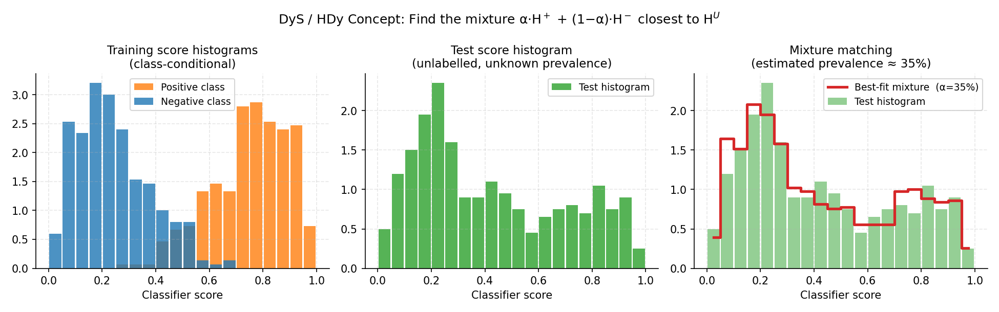

2.6. Distribution Matching#
Distribution matching (DM) methods estimate prevalences without inverting a confusion matrix or re-weighting posteriors. Instead, they find the mixture proportion of class-conditional distributions that best reproduces the observed test distribution. Like the other families they target prior probability shift — the class priors change between train and test while \(p(x \mid y)\) stays fixed — but they handle non-standard classifiers and multiclass problems natively.
Core idea: During training, DM methods learn a representation \(r_c\) of each class’s distribution (a histogram, density, kernel mean, …). At test time, they find the prevalence vector \(\hat{p}\) such that the mixture
is as close as possible to the test representation \(r_U\), under some dissimilarity measure. This is solved as a constrained optimisation over the probability simplex.
mlquantify organises distribution matching into four representation
families — histogram, density (KDE), kernel, and scores — all
exposed through mlquantify.matching.
2.6.1. Histogram Methods#
Histogram methods discretise the classifier’s score distribution into bins. They are the oldest DM family and remain competitive on binary problems.
Binary-only (unless noted)
Histogram methods are fundamentally binary. mlquantify applies OvR
decomposition automatically for multiclass datasets.
2.6.1.1. DyS — Distribution y-Similarity#
DyS (Maletzke et al., 2019) builds a histogram of classifier scores
for each class from cross-validated predictions. At test time it searches for
the mixture proportion \(\alpha \in [0,1]\) that minimises a dissimilarity
measure between the test score histogram and the mixture of class histograms:
Why it excels: DyS is a framework that separates the representation (histogram), the dissimilarity measure, and the solver. It can be configured with any distance and bin size. Maletzke et al. (2019) showed it beats threshold-adjustment methods and matches EMQ on many benchmarks.
2.6.1.1.1. Parameters#
Parameter |
Default |
Explanation |
|---|---|---|
|
|
Probabilistic classifier ( |
|
|
Number of histogram bins, or an array of bin counts to sweep. If
|
|
|
Dissimilarity measure between histograms. Options:
The distance choice affects which solver is optimal (see |
|
|
Optimisation algorithm for the mixture search:
|
|
|
How to aggregate results across multiple bin sizes. |
|
|
Add Laplace (add-one) smoothing to histogram counts. Prevents zero-bin issues when training data is scarce. |
|
|
Cross-validation folds for computing training scores. |
|
|
Stratified folds. |
|
|
Multiclass decomposition. |
{kind=link}

Left: class-conditional score histograms learned from training data. Centre: test score histogram (unlabelled — unknown prevalence). Right: DyS searches for the mixture proportion α that makes α·H⁺ + (1−α)·H⁻ (red step line) match the test histogram (green bars) as closely as possible.#
2.6.1.1.2. Examples#
Basic binary usage:
from mlquantify.matching import DyS
from sklearn.linear_model import LogisticRegression
from sklearn.datasets import make_classification
from sklearn.model_selection import train_test_split
X, y = make_classification(n_samples=1000, weights=[0.8, 0.2],
random_state=42)
X_train, X_test, y_train, y_test = train_test_split(
X, y, test_size=0.3, random_state=42)
q = DyS(estimator=LogisticRegression())
q.fit(X_train, y_train)
print(q.predict(X_test))
# {0: 0.79, 1: 0.21}
Customising bins and distance:
import numpy as np
from mlquantify.matching import DyS
from sklearn.linear_model import LogisticRegression
q = DyS(
estimator=LogisticRegression(),
bins_size=np.arange(2, 32, 2), # sweep 2,4,6,...,30 bins
distance='hellinger',
bin_strategy='median', # median across all bin sizes
laplace_smoothing=True,
)
q.fit(X_train, y_train)
print(q.predict(X_test))
Using aggregate with pre-computed scores:
import numpy as np
from mlquantify.matching import DyS
from sklearn.linear_model import LogisticRegression
clf = LogisticRegression().fit(X_train, y_train)
# Positive-class scores (column 1)
train_scores = clf.predict_proba(X_train)[:, 1]
test_scores = clf.predict_proba(X_test)[:, 1]
q = DyS(clf)
q.fit(X_train, y_train)
print(q.aggregate(test_scores, train_scores, y_train))
2.6.1.2. HDy — Hellinger Distance y-Similarity#
HDy (González-Castro et al., 2013) is a specific instantiation of
the DyS framework that sweeps over multiple bin sizes
(\(10, 20, \ldots, 110\) by default) and returns the median prevalence
across all bin sizes. It uses the Hellinger distance as the dissimilarity.
Why it exists: HDy was the original paper that introduced the idea of comparing score histograms for quantification. The multi-bin median strategy reduces sensitivity to the bin count hyperparameter, making HDy robust without tuning.
2.6.1.2.1. Parameters#
Same structure as DyS. Key defaults:
distance='hellinger'bin_strategy='median'bins_size=np.linspace(10, 110, 11, dtype=int)
from mlquantify.matching import HDy
from sklearn.linear_model import LogisticRegression
q = HDy(estimator=LogisticRegression())
q.fit(X_train, y_train)
print(q.predict(X_test))
2.6.1.3. HDx — Hellinger Distance x-Similarity (classifier-free)#
HDx (González-Castro et al., 2013) compares class-conditional
feature histograms directly, without using a classifier. For each
feature, it builds a histogram for each class; the mixture of feature
histograms that best matches the test histogram gives the prevalence estimate.
Why it exists: HDx is a non-aggregative histogram method — it does not need a classifier at all. It is useful when no reliable classifier is available, or as a sanity check. Performance is generally below HDy/DyS (which use a classifier’s summary score), but it is a zero-cost baseline.
2.6.1.3.1. Parameters#
Parameter |
Default |
Explanation |
|---|---|---|
|
|
Array of bin counts to sweep (default: |
|
|
Multiclass decomposition. |
from mlquantify.matching import HDx
q = HDx()
q.fit(X_train, y_train)
print(q.predict(X_test))
# No classifier needed
2.6.1.4. SMM — Score Mixture Model#
SMM extends DyS to use a more flexible representation of the
score distribution. Parameters match DyS.
2.6.2. Density Methods — KDEy#
KDE-based methods replace histograms with smooth kernel density estimates (KDE), avoiding bin-count sensitivity while still matching distributions.
2.6.2.1. KDEy-HD, KDEy-CS, KDEy-ML#
The three KDEy variants (Moreo et al., 2024) share the same architecture: they build a KDE over classifier posteriors on the training data (for each class) and minimise a dissimilarity to the test KDE at prediction time. They differ in the dissimilarity used:
KDEyHD— Hellinger distance between KDEs.KDEyCS— squared cosine distance between KDEs.KDEyML— maximises the mixture log-likelihood (equivalent to minimising negative log-likelihood).
Why they exist: KDEy methods are natively multiclass (unlike DyS/HDy) and avoid the histogram bin-count hyperparameter. Moreo et al. (2024) showed they are state-of-the-art for multiclass quantification.
2.6.2.1.1. Parameters#
Parameter |
Default |
Explanation |
|---|---|---|
|
|
Probabilistic classifier. |
|
|
KDE bandwidth (smoothing). Smaller values give sharper densities
(more variance), larger values smooth them out (more bias). Use
cross-validation to tune: try |
|
|
KDE kernel type. |
|
|
Optimisation solver for the simplex-constrained mixture problem. |
|
|
Cross-validation folds. |
|
|
Stratified folds. |
2.6.2.1.2. Examples#
Binary with KDEyHD:
from mlquantify.matching import KDEyHD
from sklearn.linear_model import LogisticRegression
q = KDEyHD(estimator=LogisticRegression(), bandwidth=0.1)
q.fit(X_train, y_train)
print(q.predict(X_test))
Multiclass with KDEyML (best accuracy):
from mlquantify.matching import KDEyML
from sklearn.linear_model import LogisticRegression
from sklearn.datasets import make_classification
X, y = make_classification(n_samples=800, n_classes=4,
n_informative=6, n_redundant=0,
random_state=42)
X_train, X_test = X[:600], X[600:]
y_train = y[:600]
q = KDEyML(LogisticRegression(), bandwidth=0.05)
q.fit(X_train, y_train)
print(q.predict(X_test))
Tuning bandwidth with grid search:
from mlquantify.model_selection import GridSearchQ
from mlquantify.matching import KDEyHD
from mlquantify.model_selection import APP
from mlquantify.metrics import MAE
from sklearn.linear_model import LogisticRegression
protocol = APP(batch_size=100, n_prevalences=21, repeats=5)
gs = GridSearchQ(
quantifier=KDEyHD(LogisticRegression()),
param_grid={'bandwidth': [0.01, 0.05, 0.1, 0.2, 0.5]},
protocol=protocol,
error=MAE,
)
gs.fit(X_train, y_train)
print(gs.best_params_)
Tip
Use KDEyML for multiclass problems — it is consistently the most accurate KDE variant in Moreo et al. (2024)’s benchmark. Use KDEyHD for binary problems if you want a fast alternative to DyS.
2.6.3. Kernel Methods#
2.6.3.1. MMD — Maximum Mean Discrepancy#
MMD_RKHS (Maximum Mean Discrepancy in Reproducing Kernel Hilbert
Space) matches class-conditional kernel mean embeddings of the raw
feature vectors, rather than classifier scores. It directly computes the
kernel mean of each class in feature space and finds the mixture that
minimises the MMD to the test kernel mean.
Why it exists: MMD_RKHS is a non-aggregative method (no classifier needed) that works directly on the feature space via a kernel trick. It is useful when features are naturally compared with a kernel (e.g. strings, graphs, or dense embeddings). Iyer et al. (2014) showed strong convergence guarantees for kernel quantification.
2.6.3.1.1. Parameters#
Parameter |
Default |
Explanation |
|---|---|---|
|
|
Kernel function for computing the RKHS mean embedding. Options:
|
|
|
RBF/poly/sigmoid bandwidth. |
|
|
Polynomial degree for |
|
|
Independent term for poly/sigmoid kernels. |
|
|
Optimisation solver. |
from mlquantify.matching import MMD_RKHS
q = MMD_RKHS(kernel='rbf', gamma=0.1)
q.fit(X_train, y_train) # No classifier — works on raw features
print(q.predict(X_test))
2.6.4. Score Methods#
2.6.4.1. SORD — Score-based Optimal Ranking Distribution#
SORD (Score-based Optimal Ranking Distribution) estimates prevalence
by comparing the ranked order of classifier scores between the test set
and the mixture of class-conditional training scores, using an earth-mover-style
distance.
Why it exists: SORD operates on the continuous score values without discretisation (no bins needed) and without density estimation. It is fast, parameter-free (beyond the classifier), and competitive with histogram methods.
from mlquantify.matching import SORD
from sklearn.linear_model import LogisticRegression
q = SORD(estimator=LogisticRegression())
q.fit(X_train, y_train)
print(q.predict(X_test))
2.6.5. Choosing a Distribution Matching Method#
Method |
Multiclass |
Needs clf |
Key hyperparameter |
Best for |
|---|---|---|---|---|
DyS |
✗ (OvR) |
✓ |
|
Binary; strong with median-sweep bins. |
HDy |
✗ (OvR) |
✓ |
|
Binary; tuning-free median-sweep baseline. |
HDx |
✗ (OvR) |
✗ |
|
No classifier available; sanity check. |
KDEyHD |
✓ |
✓ |
|
Binary & multiclass; smooth density matching. |
KDEyML |
✓ |
✓ |
|
Multiclass; best overall accuracy. |
MMD_RKHS |
✓ |
✗ |
|
Kernel-based features; no classifier needed. |
SORD |
✗ (OvR) |
✓ |
None |
Binary; parameter-free, fast. |
Practical recommendation:
For binary problems: DyS or MS (threshold-adjustment) are strong.
For multiclass problems: KDEyML is the recommended starting point.
When no classifier is available: HDx or MMD_RKHS.
For a parameter-free binary option: SORD.
2.6.6. Assumptions and when to use#
What must hold. Distribution matching is unbiased when the chosen representation (scores, features, densities or embeddings) has a class-conditional distribution that is invariant across train and test — i.e. under prior probability shift — and the per-class representations are sufficiently distinct.
When it fails. Sparse or high-dimensional representations (too many histogram bins, very small test bags) make the matched distance noisy. Histogram methods are bin-sensitive; KDE, kernel and energy methods avoid binning.
Best suited for. Binary problems (
DyS,HDy,SORD) and multiclass problems with several classes (KDEyML,EDy,MMD_RKHS), where counting-based correction struggles.
2.6.7. References#
References
González-Castro, V., Alaiz-Rodríguez, R., & Alegre, E. (2013). Class Distribution Estimation Based on the Hellinger Distance. Information Sciences, 218, 146–164.
Maletzke, A., dos Reis, D., Cherman, E., & Batista, G. (2019). DyS: A Framework for Mixture Models in Quantification. AAAI, 4552–4560.
Moreo, A., González, P., & del Coz, J. J. (2024). Kernel Density Estimation for Multiclass Quantification. Machine Learning, 113, 3075–3107.
See also
Likelihood-Based Quantification for EMQ, which is often as good as or better than DM methods under pure prior probability shift.